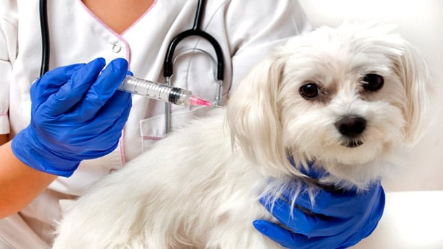

Vacunas para perros ¿Son obligatorias, cuando ponerlas?
Si vamos a convivir con un perro, las vacunas son una de las actuaciones veterinarias que debemos implantar como rutina preventiva tanto si nuestro compañero es un cachorro como si se trata ya de un adulto. Indiferentemente de si vive dentro o fuera de casa.
Alrededor de las vacunas existe desconocimiento y desconfianza, lo que lleva a perder de vista la importancia vital que tienen en la prevención de enfermedades mortales. A continuación aclaramos todas las dudas y exponemos el calendario de vacunas recomendado.
¿Cómo funcionan las vacunas?
Para entender el funcionamiento de las vacunas, hay que empezar por repasar algunos conceptos básicos de inmunología. Cuando un animal enferma, su sistema inmune crea defensas, conocidas con el nombre de anticuerpos, contra el antígeno invasor.
Este proceso sirve para combatir la enfermedad y, muy importante, crear una memoria inmunológica. Esta permite que, en un segundo contacto con el mismo patógeno, el organismo reaccione con rapidez, minimizando así la enfermedad. El problema es que las patologías más graves pueden hacer que el animal fallezca en un primer contacto.
De esta manera el animal forma una memoria inmunológica y, de verse expuesto a la enfermedad de manera natural, la combatirá rápidamente, siendo el cuadro clínico más leve o incluso inexistente.
¿Por qué hay que vacunar a los perros?
Los perros están expuestos a diferentes enfermedades en su día a día. Por suerte, la mayoría desencadenan un cuadro clínico que, aunque puede ser complejo, suele ser tratable con intervención veterinaria.
Pero otras patologías, en cambio, resultan potencialmente mortales y no hay más que tratamiento de soporte y sintomático contra ellas. Ya que el tratamiento que las elimina es a veces inefectivo, la ciencia ha dirigido sus esfuerzos a prevenirlas. Y este es el trabajo de las vacunas.
Administrar vacunas previene y erradica enfermedades infecciosas, contribuye a la salud pública en la medida de evitar zoonosis, y disminuye el uso de antibióticos, entre otras funciones.
Tipos de vacunas para perros
Las vacunas pueden elaborarse con patógenos vivos (con actividad), atenuados (con cierta actividad) o muertos (sin actividad). El objetivo de esto es producir menos reacción y buena inmunidad. Antes o después, todas necesitan revacunación.
La mayoría de las vacunas se administran mediante inyección subcutánea, pero también las hay intranasales u orales (como la de la tos de las perreras). Otra clasificación es la que se establece entre monovalentes, que son las que contienen la vacuna contra solo una enfermedad, o bi, tri, tetra o polivalentes, según incluyan dos, tres, cuatro o más vacunas.
¿Qué es el calendario de vacunacion?
Es el nombre que recibe el protocolo que se sigue para la administración de las vacunas. El calendario nos indica qué vacunas hay que poner y cuándo, señalando también las revacunaciones necesarias y las vacunas que se consideran optativas.
Es habitual que varíe según los países e incluso las regiones o comunidades, y siempre hay que tener en cuenta las condiciones de vida y las características del perro. Por ello lo mejor es adaptar el calendario a cada caso y, si vamos a viajar, informarnos de los requisitos en el lugar de destino.
¿Cuáles son las vacunas recomendadas para un perro?
En la actualidad existen numerosas vacunas a nuestra disposición para proteger a nuestro perro. La mayoría llevan utilizándose durante años con gran éxito.
En el futuro seguro que se desarrollarán nuevas vacunas. En los siguientes apartados vamos a repasar las que se consideran esenciales y las opcionales, así como a describir, brevemente, la enfermedad contra la que inmunizan.